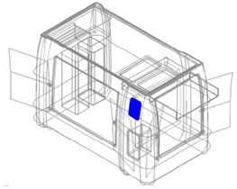
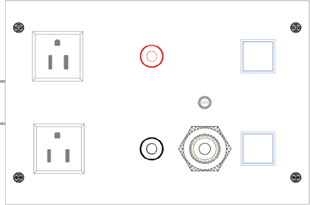
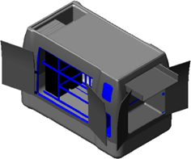
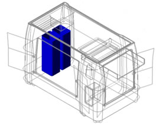
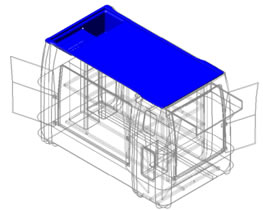

LDM
Manual de Operación del Laboratorio Móvil
Este laboratorio didáctico móvil se alimenta con, 127 VAC. típicos, que sirven para alimentar una fuente autónoma de energía y ésta a su vez al control del laboratorio.

A continuación presentamos la carátula de control para operar el laboratorio móvil:

1.-Receptáculo de alimentación de 127 VAC: En estos receptáculos se puede conectar algún dispositivo externo para realizar prácticas.
2.- Control para la bomba de agua: Este control manipula la salida de agua en la toma de la tarja, la salida del agua es constante al presionar el botón, para desactivar la salida de agua presione nuevamente el botón.
1.- Alimentación de la bomba de agua: Esta alimentación proviene de la fuente autónoma de energía, y alimentada a su vez mediante un botón con retención a la bomba de agua permitiendo su salida.
Ahora que ya se sabe el uso de los controles, es importante mencionar que todo está conectado a la fuente autónoma de energía. Esto se hace con el fin de que cuando no se disponga de corriente eléctrica, la fuente autónoma de energía suministre corriente y se puedan realizar las practicas.

El laboratorio, cuenta en su interior con compartimentos los cuales contienen instrumentación y consumibles, así como un resguardo en donde se ubica la sensórica especializada.

Dentro del laboratorio existen 2 contenedores una con agua limpia y otro con agua residual.
Contenedor de agua limpia: Este contenedor lleva en su interior la bomba de agua el cual alimenta al grifo, que nos permite disponer de agua limpia.
Contenedor de agua residual: En este contenedor se concentra toda el agua utilizada para lavar los instrumentos químicos, por lo que es importante periódicamente desaguar este contenedor.
PRECAUCION: El agua del tanque residual contiene ciertos reactivos químicos por lo que deben tomarse las precauciones al manipular este tanque.
Dentro del laboratorio móvil, debajo de los contenedores existe una válvula para el desagüe del contenedor de agua residual.
IMPORTANTE: El agua residual contiene ciertos reactivos que pueden dañar su tubería del drenaje, por lo que deben tomar sus precauciones.

En la parte superior del laboratorio existe un área de trabajo cubierta con un tapete plástico en donde se llevan a cabo los experimentos.
NOTA: En caso que algún líquido peligroso se llegue a derramar se puede escurrir hacia el cubo de la tarja, para una rápida limpieza.
Al trabajar con ácidos, la limpieza en caso de derrame debe realizarse inmediatamente para evitar daños en los acabados.
Es importante mencionar que este laboratorio requiere de ciertos cuidados para que su funcionamiento sea el óptimo en todo momento, como sabemos, este laboratorio cuenta con ciertos reactivos químicos, así como equipo de física para realizar experimentos correspondientes.
1.- Parte eléctrica: Como ya sabemos este equipo cuenta con un control eléctrico en el cual están conectados varios elementos. Estos elementos están conectados directos a la fuente autónoma de energía por lo que es importante que esta fuente siempre esté bien cargado, para evitar que se llegue a des energizar y así evitar que se suspenda cualquier experimento que se esté realizando.
¿Cómo se puede evitar este tipo de error?
Este tipo de error se puede evitar verificando que la alimentación a la fuente autónoma siempre este energizado o se cargue la fuente autónoma de energía cuando el laboratorio móvil no esté siendo utilizado.
Una bomba de agua, para aumentarse vida útil, se recomienda que ésta bomba se active sólo cuando sea necesario, ya que si se comete el error de dejarlas activadas durante un tiempo prolongado disminuirá la vida útil de estos elementos.
2.- Estructura: Siendo un laboratorio de fibra de vidrio, el acabado puede dañarse debido al derrame de reactivos.
¿Cómo puedo evitar que se llegue a dañar?
Es importante evitar cualquier tipo de derrame, pero en caso de derrame será necesario limpiar de inmediato con agua.
Podemos evitar muchos accidentes si cada material y equipo de este laboratorio se manejan con cuidado y se utiliza únicamente para su función indicada y se respeten las áreas que son para trabajo. La parte superior del laboratorio está diseñado específicamente para realizar las prácticas.
Para seguridad del instrumental, los componentes deben permanecer bajo llave cuando no se esté utilizando.
Al momento de mover este laboratorio a otras áreas es importante que se mueva apoyándose de las manijas ya que es la manera más fácil, y al momento de moverlo se debe evitar golpes que puedan dañar la estructura.
3.- Elementos del laboratorio: sabemos este laboratorio cuenta con una serie de elementos y factores que ayudan a un óptimo funcionamiento.
Sabemos que este laboratorio cuenta con un tanque para contener el agua que se utilizara en los experimentos, estos contenedores tienen agua limpia y residual respectivamente. Para el tanque de agua limpia se debe cuidar nunca esté por debajo del nivel de la bomba pues podría dañarla, para el tanque de agua residual es importante nunca sobrepasar su límite pues un derrame podría dañar el laboratorio.
IMPORTANTE: Antes de llenar el contenedor de agua limpia se debe vaciar el contenedor de agua residual.
Para evitar desplazamientos indeseados del laboratorio, es importante aplicar los frenos que se encuentran en las ruedas del laboratorio.
4.- Equipo químico: Dentro del laboratorio tenemos una serie de elementos reactivos, que están separados en maletines. Debe mantenerse la organización original de estos maletines pues reactivos que contiene pueden reaccionar entre sí. Es también importante verificar que estén bien sellados los envases individuales antes de guardar.
5.- Equipo físico: Para realizar los experimentos físicos se utilizan diversos elementos mecánicos algunos de ellos pequeños o por su tamaño frágil. Por eso se debe tener cuidado y debe revisarse que no exista ningún faltante al cabo de cada practica y piezas, muchas de estas pequeñas o frágiles, así que el uso debe ser muy sutil y cuidadoso y evitar que los alumnos jueguen con estas piezas y al momento de acabar la práctica se deben colocar es su lugar especifico.
FUENTE AUTONOMA DE ENERGIA |
||
La fuente autónoma de energía no alimenta al sistema. |
Verifique que la fuente este cargada de lo contrario conecte a la red eléctrica |
|
BOMBA DE AGUA |
||
La bomba de agua no funciona.
|
Verifique que el contenedor de agua limpia contenga suficiente agua. |
|
Verifique que el botón que activa esta bomba está siendo bien oprimido. |
||
Verifique que la conexión del cable que alimenta esta bomba este bien conectado |
||
Verifique que la fuente autónoma de energía no esté descargada. |
||
Verifique que el modulo de control sea bien alimentado por la fuente autónoma de energía. |
||